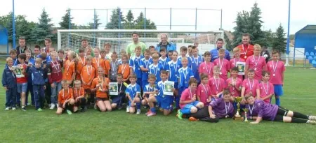

Slavoj Cup 2015
Turnaj prípraviek v Boleráze

Dňa 20 júna 2015 sa u nás v Bolerázi konal 1. ročník turnaja prípravky Slavoj Cup 2015. Turnaja sa zúčastnili mužstvá Boleráza, Bučian, Dobrej Vody a Smoleníc. V tejto sezóne skončili všetky mužstvá na popredných priečkach, preto sa očakával kvalitný turnaj. Rozhodoval ho Stanislav Krivošík.
1. zápas
TJ Slavoj Boleráz - ŠK Dobrá Voda 3:1 (1:1)
góly Boleráz: Michal Kučera, Matúš Valášek, Dominik Daniš
gól Dobrej Vody: Lukáš Danko
2. zápas
OFK Bučany - OŠK Smolenice 6:0 (4:0)
góly Bučany: Matej Rybanský-4, Tomáš Slatina, Martin Grosman
3. zápas
TJ Slavoj Boleráz - OŠK Smolenice 7:0 (2:0)
góly Boleráz: Jakub Buchan-3, David Nídel-2, Tomáš Lopatka, Veronika Štrbová
4. zápas
ŠK Dobrá Voda - OFK Bučany 0:2 (0:0)
góly Bučany: Martin Parízek, Matej Rybanský
5. zápas
ŠK Dobrá Voda - OŠK Smolenice 2:0 (1:0)
góly Dobrá Voda: Mário Štefák, Marek Drobný
6. zápas
OFK Bučany - TJ Slavoj Boleráz 2:0 (1:0)
góly Bučany: Mateo Enev-2
Tabuľka:
1. OFK Bučany 3 3 0 0 10:0 9
2. TJ Slavoj Boleráz 3 2 0 1 10:3 6
3. ŠK Dobrá Voda 3 1 0 2 3:5 3
4. OŠK Smolenice 3 0 0 3 0:15 0
Najlepší hráč turnaja: Mateo Enev (Bučany)
Najlepší brankár turnaja: Pavol Lipták (Smolenice)
Najlepší strelec turnaja: Matej Rybanský (Bučany)
Turnaj splnil očakávania. Zaslúžene vyhrali Bučany, ktorý vytvorili dobrú partiu okolo trénera Marcela Huttu. Chceli by sme, aby turnaj pokračoval aj v ďalších rokoch. Ďakujeme všetkým sponzorom a ľuďom, ktorí podporili túto akciu.
Strelci:
5. gólov: Matej Rybanský (Bučany)
3. góly: Jakub Buchan (Boleráz)
2. góly: David Nídel (Boleráz), Mateo Enev (Bučany)
1. gól: Michal Kučera (Boleráz), Veronika Štrbová (Boleráz), Dominik Daniš (Boleráz), Matúš Valášek (Boleráz), Tomáš Lopatka (Boleráz), Tomáš Slatina (Bučany), Mário Grosman (Bučany), Martin Parizek (Bučany), Lukáš Danko (Dobrá Voda), Mário Štefák (Dobrá Voda), Marek Drobný (Dobrá Voda)
Fotogaléria turnaja: klikni sem
Zostavy:
TJ Slavoj Boleráz: 20-Tomáš Valášek, 2-Tobiáš Kitta, 3-Jakub Braniša, 5-Matúš Buchan, 7-Andrej Lopatka, 8-Michal Kučera, 9-Veronika Štrbová, 10-Jakub Buchan, 11- Michal Turoň, 12-Tomáš Mažgút, 13-Dominik Daniš, 14-Simon Schon, 15-Tomáš Lopatka, 16-Filip Lančarič, 17-Matúš Valášek, 18-Tomáš Kučera, 19- Dávid Nídel
OFK Bučany: 1-Matúš Belokostolský, 2-Tomáš Vidlička, 4-Kristián Valko, 6-Adrián Hrúz, 7-Alex Boris, 8-Tomáš Slatina, 9-Valér Zachar, 10-Mateo Enev, 11-Martin Parízek, 12-Matej Rybanský, 13-Martin Grosman, 15-Matej Mišík, 16-Erik Valko, 18-Artur Šajbidor
OŠK Smolenice: 20-Pavol Lipták, 3-Adam Kadlec, 4-Dominik Tokár, 5-Timotej Medvedzký, 9-Filip Pavlík, 10-Dominik Osátko, 11-Juraj Lipták, 13-Martin Janirík, 16-Dominik Pavlík, 17-Ondrej Koník
ŠK Dobrá Voda: 1-Lukáš Drobný, 2-Marek Benedikovič, 5-Jakub Novák, 6-David Puškáš, 7-Filip Benedikovič, 8-Lukáš Danko, 9-Veronika Drobná, 10-Klaudia Danková, 11-Marko Krajčovič, 12-Marek Drobný, 14-Simona Štefáková, 15-Petra Danková, 16-Mário Štefák
Zdroj: starý web klubu slavojboleraz.webnode.sk, prevzaté 16. 11. 2026 bez úprav údajov.